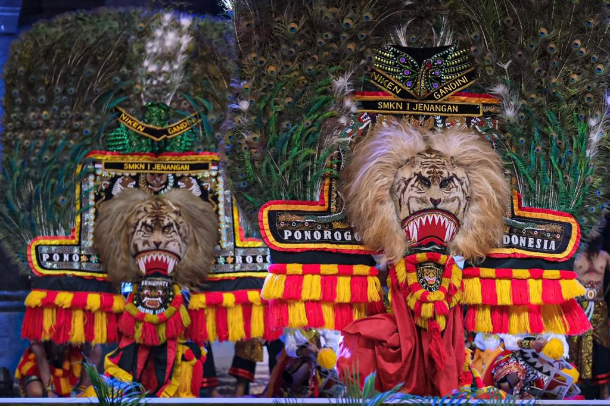
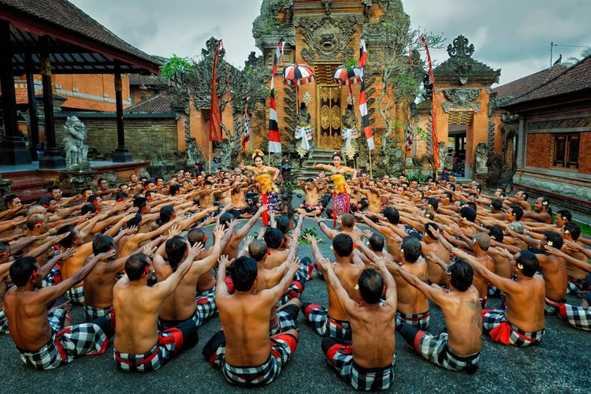
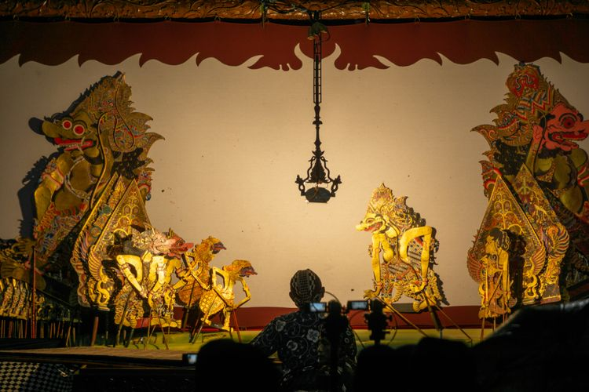
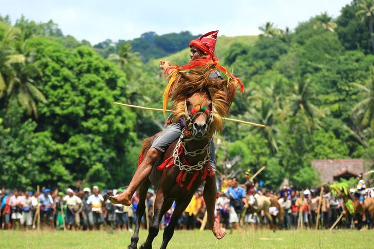
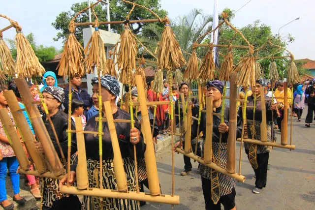
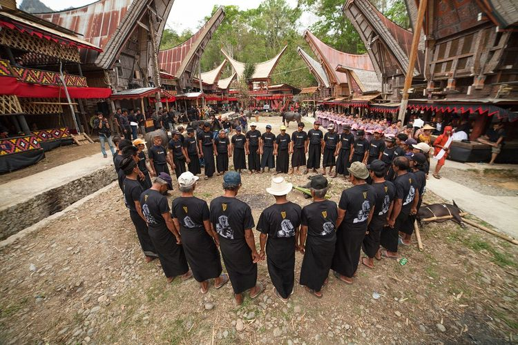
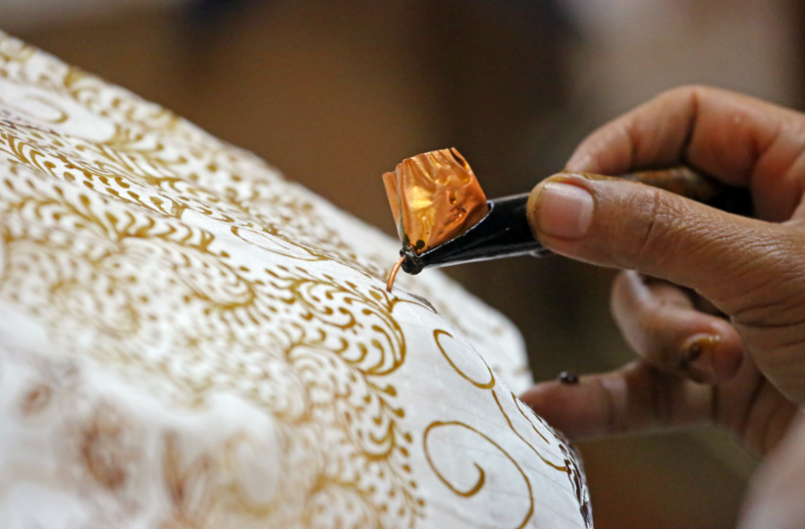
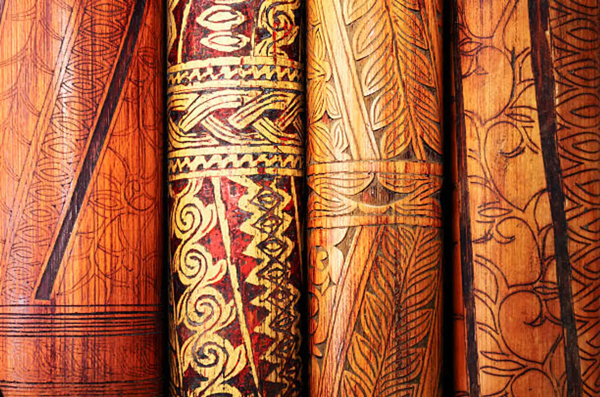
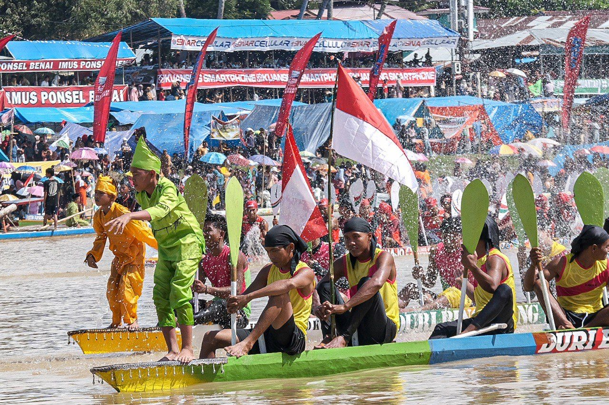

Indonesian Culture
Discover the richness of Indonesian culture, from its breathtaking landscapes to its dynamic traditions
Kebudayaan Indonesia
Keberagaman kebudayaan Indonesia mempesona dengan beragamnya tradisi, tarian, upacara adat, bahasa, dan seni yang unik di setiap daerah. Dari Sabang sampai Merauke, setiap sudut Indonesia menawarkan kekayaan budaya yang membanggakan, mencerminkan keragaman etnis dan kehidupan sosial yang kaya serta kompleks. Hal ini menjadikan Indonesia sebagai salah satu negara dengan keanekaragaman budaya terbesar di dunia, memperkaya dan memperkuat identitas nasional yang unik dan beragam.
|  |  |  |
Tari Reog PonorogoReog (aksara Jawa: ꦫꦺꦪꦺꦴꦒ꧀,Réyog) merupakan tarian tradisional dari Ponorogo, Pertunjukan ini melibatkan berbagai elemen seperti tarian, musik gamelan, dan penampilan tokoh-tokoh mitologis seperti Singa Barong. Reog Ponorogo dipercaya berasal dari abad ke-11 dan memiliki hubungan dengan legenda keberanian serta kemampuan magis dari Raden Panji Asmoro BangunJawa Timur dalam arena terbuka yang berfungsi sebagai hiburan rakyat, mengandung unsur magis, penari utama adalah orang berkepala singa dengan hiasan bulu merak, dengan berat topeng mencapai 50–60 kg. Ditambah beberapa penari bertopeng dan berkuda lumping dan Reog asli dari Indonesia |
Tari KecakKecak (pelafalan: /'ke.tʃak/, secara kasar "KEH-chahk", pengejaan alternatif: Ketjak, Ketjack) adalah dramatari seni khas Bali yang lebih utama menceritakan mengenai Ramayana dan dimainkan terutama oleh laki-laki. Tarian ini dipertunjukkan oleh banyak (puluhan atau lebih) penari laki-laki yang duduk berbaris melingkar dan dengan irama tertentu menyerukan "cak" dan mengangkat kedua lengan, menggambarkan kisah Ramayana saat barisan kera membantu Rama melawan Rahwana. Namun, Kecak berasal dari ritual sanghyang, yaitu tradisi tarian yang penarinya akan berada pada kondisi tidak sadar, melakukan komunikasi dengan Tuhan atau roh para leluhur dan kemudian menyampaikan harapan-harapannya kepada masyarakat. |
Kesenian WayangWayang adalah seni pertunjukan tradisional Indonesia yang menggunakan boneka kayu atau kulit yang diproyeksikan ke layar. Terdapat dua jenis wayang utama: wayang kulit (yang menggunakan kulit untuk membuat boneka) dan wayang golek (yang menggunakan boneka kayu). Pertunjukan wayang sering kali disertai dengan cerita epik seperti Ramayana atau Mahabharata, yang diceritakan dengan memadukan dialog, musik, dan gerakan tangan dari dalang (pemimpin pertunjukan). Wayang merupakan bagian integral dari budaya dan identitas nasional Indonesia, dan sering kali digunakan untuk menyampaikan nilai-nilai moral dan sosial kepada penontonnya. |
|  |  |  |
Pesta Rakyat PasolaPesta Rakyat Pasola adalah festival adat yang berasal dari Suku Sumba di Nusa Tenggara Timur, Indonesia. Festival ini melibatkan pertunjukan berkelompok berupa permainan jousting atau balapan bersama dengan menggunakan kuda dan lembing. Pasola diadakan setiap tahun pada bulan Februari atau Maret sebagai bagian dari upacara adat untuk merayakan musim panen padi dan menurut kepercayaan tradisional Sumba, juga sebagai bagian dari ritual yang bertujuan untuk menyucikan tanah dan menjaga kesejahteraan masyarakat. |
Upacara SerenUpacara Seren adalah tradisi adat Jawa Barat yang dilakukan untuk menyambut atau menutup masa tanam padi. Upacara ini merupakan bagian dari kepercayaan lokal yang menghormati dewi atau roh yang diyakini mengatur hasil panen dan kesuburan tanah. Seren biasanya melibatkan prosesi ritual, doa bersama, dan serangkaian upacara untuk menghormati dan memohon berkah dari roh tersebut. Tradisi ini merupakan contoh nyata dari kekayaan budaya dan spiritualitas masyarakat Jawa Barat. |
Upacara Adat TorajaUpacara adat Toraja merupakan serangkaian ritual yang kaya makna dari masyarakat Toraja di Sulawesi Selatan, Indonesia. Ritual ini melibatkan berbagai tahapan mulai dari persiapan hingga pelaksanaan yang sangat terstruktur dan penuh simbolisme. Salah satu upacara adat Toraja yang paling terkenal adalah Rambu Solo, atau sering disebut sebagai "upacara kematian" yang dilakukan untuk mengantarkan roh orang yang meninggal ke alam baka dengan penuh penghormatan dan upacara adat yang khusyuk. Selain Rambu Solo, masih banyak lagi upacara adat Toraja lainnya seperti Rambu Tuka, Rambu Siampe, dan Rambu Balu. Tradisi ini tidak hanya memperkuat ikatan sosial dalam masyarakat Toraja tetapi juga mencerminkan kompleksitas dan kekayaan budaya mereka yang telah berlangsung selama berabad-abad. |
|  |  |  |
BatikBatik adalah seni tradisional membuat kain dengan teknik menutupi bagian tertentu dari kain dengan lilin, sehingga bagian itu tidak terkena pewarna saat proses pencelupan. Batik Indonesia memiliki beragam motif dan corak yang khas dari setiap daerahnya, dan diakui sebagai Warisan Budaya Takbenda UNESCO |
Seni Ukir Suku DayakSeni ukir suku Dayak di Kalimantan termasuk dalam warisan budaya Indonesia yang kaya. Ukiran Dayak sering ditemukan pada perabot rumah tangga, senjata tradisional, dan hiasan ritual. Ukiran ini sering kali menggambarkan motif-motif alam dan mitologi suku Dayak. |
Pacu Jalur KuansingPacu Jalur adalah festival perahu tradisional yang dilakukan di Kuansing, Riau. Festival ini melibatkan perlombaan perahu tradisional yang didayung dengan menggunakan tangan, dimana masyarakat setempat bersaing untuk memperebutkan gelar juara. Pacu Jalur Kuansing adalah salah satu event budaya dan olahraga yang sangat populer di Riau. |